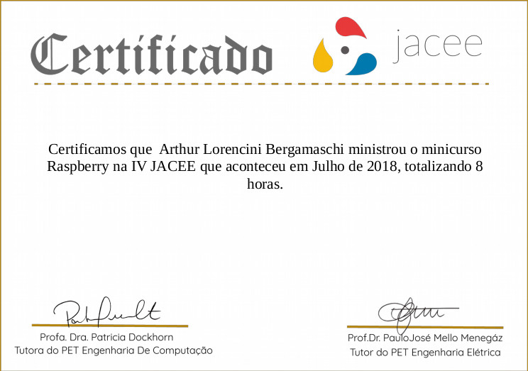

Arthur Lorencini Bergamaschi
Data de nascimento: 15/03/1997 - 24 anos; Solteiro.
Telefone/WhatsApp:
+5527995299023; Telegram:
@mrtuckie; email:
arthur.lorencini@gmail.com;
Endereço: Praça Wolghano Netto, 208. Jardim da Penha - Vitória - ES -
Brasil.
Currículo:
-
Estudante de Engenharia Elétrica na
UFES;
-
Lecionou
aulas de
Python 3 para Raspberry Pi durante a
JACEE de 2018;
-
Possui canal no
YouTube sobre
Eletrônica;
-
Lecionou aulas de Eletrônica Básica 2 no
YouTube
para ajudar os colegas de classe;
-
Participou de um ano de Iniciação Científica no projeto
Kurupira
"Armadilha Fotográfica para observação remota de
Harpias"
pelo CPID e Labtel;
-
Engenheria reversa
e
melhorias
em módulos de aprendizado como um pequeno do Laboratório de
Microeletrônica;
-
Desenvolveu um protótipo de LoRa Mesh na matéria de Projeto Orientado da
Engenharia Elétrica da UFES;
-
Vencedor do desafio Time-Now no primeiro
HachathonES de 2019;
-
CEO no projeto "Salva-Vidas" da matéria de Empreendedorismo da UFES em
2019. Terceiro lugar da disciplina;
-
Criação de notas de aula
"open source" da matéria de Sistemas Embarcados I da
UFES.
Interesses:
- Microcontroladores e Microprocessadores;
- Microeletrônica;
- Internet das Coisas (IoT);
- LoRa;
-
Machine Learning e Tiny Machine Learning (para sistemas embarcados);
- ChatBots;
- Python;
- Manuntenção de eletroeletrônicos e computadores;
- Jogos.
Experiências anteriores
Estagiário na área de Planejamento Estratégico da
Wine.com.br
Certificados:

Encontre-me nas redes sociais:
LinkedIn
GitHub
YouTube
FreeCodeCamp
Instructables
Hackster.io
Glitch.com
"Humans are tool builders, and we build tools that can dramatically
amplify our innate human abilities"
- Steve Jobs.
"Os humanos criam ferramentas, e nós fazemos isso para aumentar
drasticamente as nossas habilidades como ser humano"
- Steve Jobs.
Link para o repositório deste
currículo.
{kind=link}